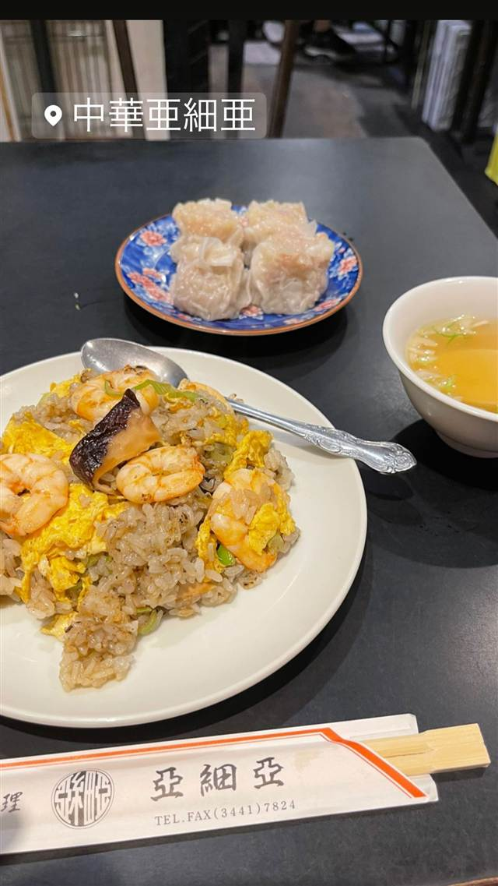

亜細亜
約80年、五反田駅前で続く肉たっぷりの焼売と硬焼きそば
中華亜細亜
1947年創業、五反田駅東口ロータリーに立つ昭和レトロな町中華の老舗。名物は肉がたっぷり詰まった焼売と、特注の太麺を揚げて五目餡をかけた硬焼きそばで、約80年にわたり地元で親しまれている。
TRIVIA
へえ、という話
- 約80年近く同じ駅前で営業を続ける老舗
- 名物の焼売は肉がたっぷり詰まっていることで知られる
| 創業 | 1947年創業 |
|---|---|
| 系譜 | 広東料理の系譜を引く、五反田駅前の老舗町中華 |
| 看板 | 焼売（シュウマイ）、硬焼きそば |
| こだわり | 製麺所に特注した太麺をじっくり揚げ、鶏ガラベースの中華スープで作った五目餡をかけた硬焼きそば |
| 予算 | 昼 ¥1,000～¥1,999 夜 ¥1,000～¥1,999 |
| 場所 | 五反田 東京都品川区東五反田 |
| 注意 | 五反田駅東口ロータリー沿いの昭和レトロな店構え、現金のみ、ランチタイムは混雑 |
食べたもの：炒飯とシュウマイ